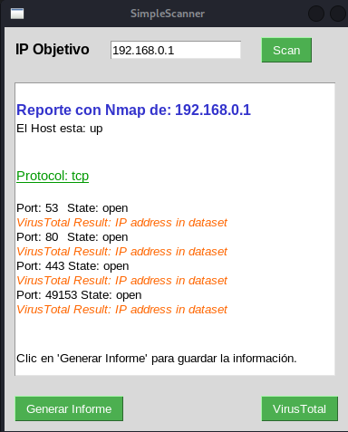
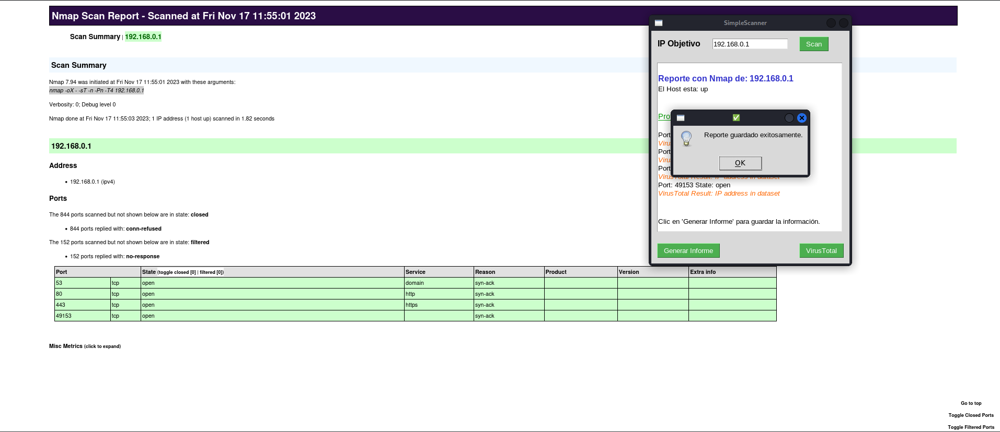

Descubre y Protege tu Red con Confianza
SimpleScanner es la herramienta ideal para explorar y asegurar tu red. Escanea puertos, integra VirusTotal y utiliza inteligencia artificial para una exploración más inteligente.
Características Clave
Exploración de Puertos
Escanea tu red en busca de puertos abiertos y evalúa su estado.
Integración con VirusTotal
Integrado con VirusTotal para una evaluación de seguridad más completa.
Beneficios
Mayor Seguridad
Identifica y aborda vulnerabilidades para fortalecer la seguridad de tu red.
Interfaz Intuitiva
Una interfaz fácil de usar que simplifica el proceso de exploración y análisis.
Capturas de Pantalla
 Contacto
Consultas y Contacto